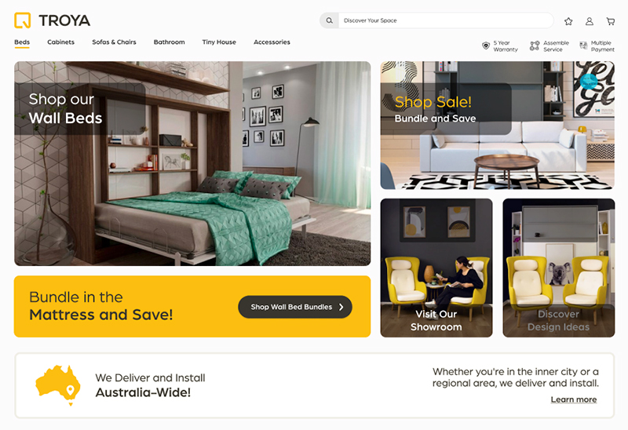
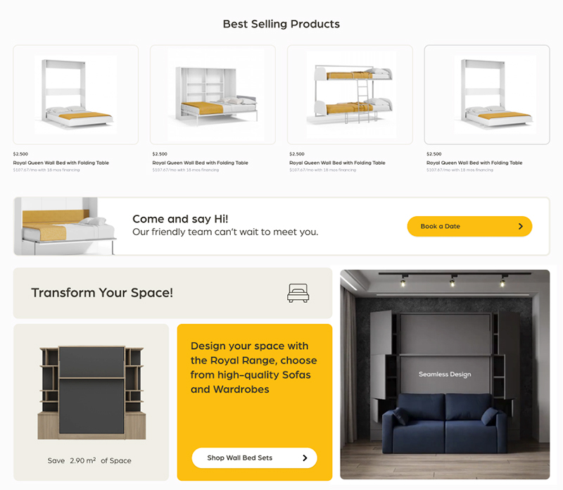
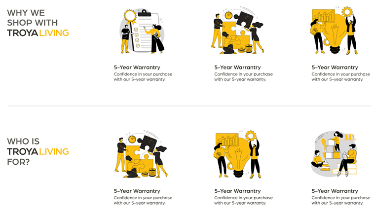
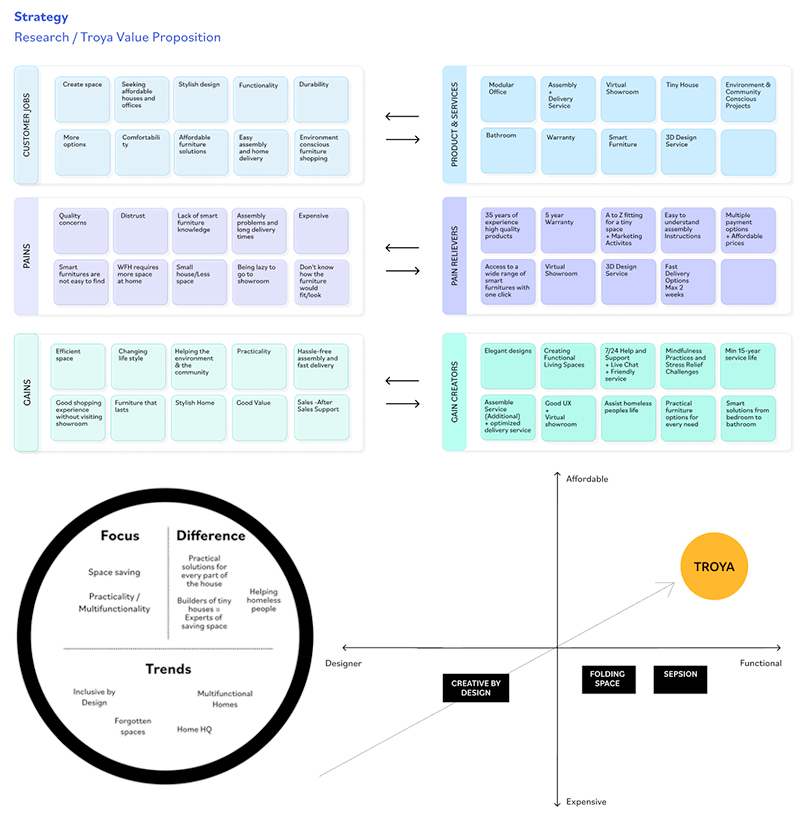
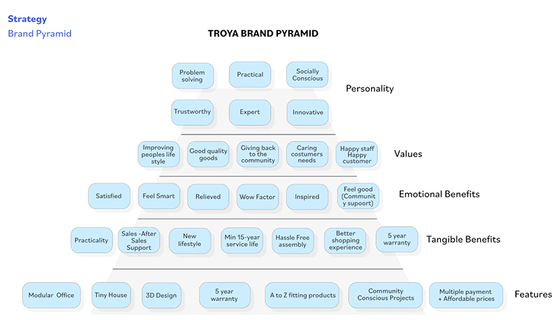
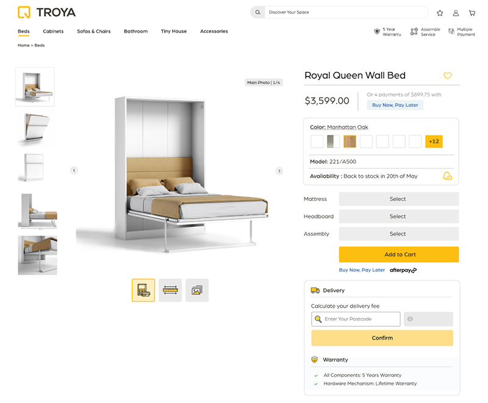
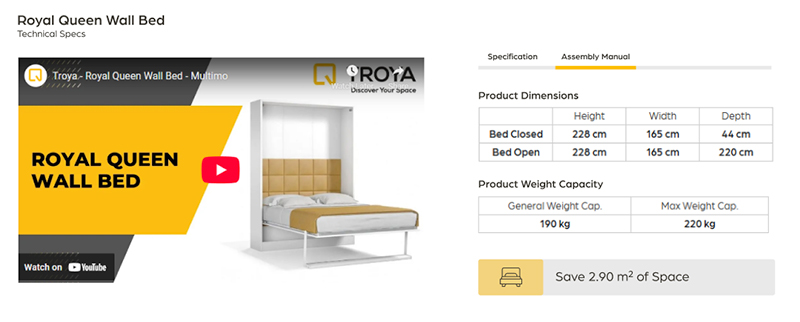
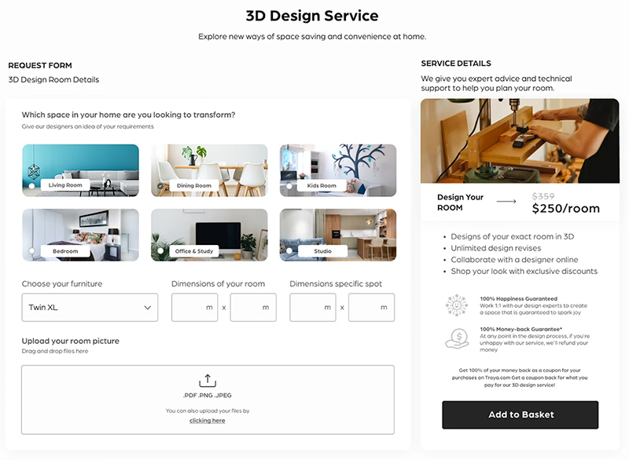
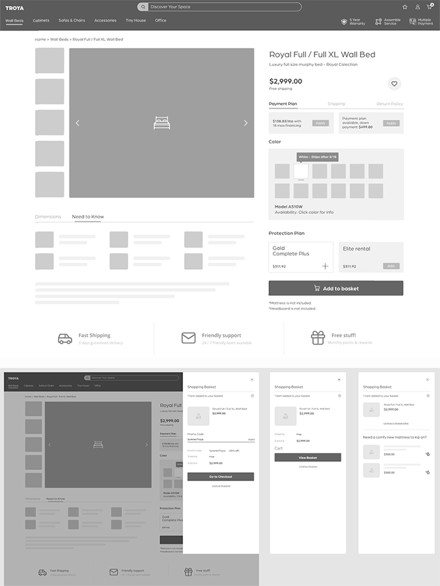

Troya - Space Saving Furniture Systems
Discover Your Space
Troya is a practical living platform that offers solutions to create space and make home life more convenient.
Practical Living platform - Home Solutions Provider - Offers multifunctional & Space-saving products for every part of the house.
Responsibilities: Conducted full user research including competitor analysis, user interviews, and surveys. Developed wireframes and low-fidelity prototypes to define the product structure and user flow. Designed high-fidelity mockups and interactive prototypes to visualize the final product experience. Collaborated with stakeholders to ensure alignment between design goals and business objectives.
troya.com.au Instagram Figma Prototype

01. Scope
The goal of this project was to design an e-commerce experience for Troya Space Saving Furniture that addresses the needs of tiny house and small flat owners seeking affordable, space-saving solutions. The platform focuses on helping users easily explore furniture options tailored to different areas of the home, while providing inspiration for efficient living. By leveraging Troya’s diverse product range, the experience aims to simplify decision-making and support users in optimizing their limited space. The overall approach combines functionality with inspiration, turning the website into both a shopping and discovery platform.
Golden Circle
What
Troya is a practical living platform that offers solutions to create space and make home life more convenient.
How
With features such as 5 years warranty, 3D design service, assembly support and fast delivery, Troya affordably provides a practical lifestyle at home.
Why
With its tiny house building and carpentry school expertise, Troya is a specialist in space-saving. The brand offers high-quality, multifunctional products for every part of the house. That's why Troya is a better choice for those looking for variety in smart solutions at home.


02. Discovery Phase
Problem Statement
Tiny house and small flat owners struggle to find affordable furniture that both fits their limited space and meets their functional needs. Additionally, existing e-commerce experiences often fail to provide clear guidance or inspiration for organizing and optimizing small living areas.
Solution Hypothesis
If users are provided with a structured e-commerce experience that categorizes furniture based on specific living areas and space-saving needs, they will be able to explore options more efficiently and make confident decisions. By combining inspirational content with product discovery, the platform can support users in visualizing and creating optimized living spaces.
Conclusions & UX Insights
Troya demonstrates strong customer satisfaction through external review signals, with an average rating of approximately 4.7/5 on Google Reviews (~94%).
Users are reaching the site through search, indicating effective organic SEO and strong visibility for brand-related queries. High organic keyword visibility (~80% of target keywords in Top 3),


03. Troya Product Page Features
- Visual Focus: Large central images make the product immediately clear.
- Color & Model: Swatches with “+12” manage many options, but some may be hidden.
- Price & Payment: Price and installment info are clear, supporting purchase confidence.
- Customization: Selection buttons guide choices, but required steps could be clearer.
- Delivery & Warranty: Delivery and warranty info are visible but could be highlighted earlier.

Specs Tab & Video Feature
- Tabbed Navigation: Users can switch between mattress specs using tabs, reducing cognitive load.
- Progressive Disclosure: Clicking a tab reveals details gradually, keeping users focused on relevant info.
- Video Integration: Mattress video next to specs provides visual context and better understanding.
- Contextual Relationship: Specs and video side-by-side allow real-time cross-referencing.
- Interactive Engagement: Tabbed menu and video encourage exploration and inform purchase decisions.


04. Wireframes
Product detail page and Add to basket side bar menu.
